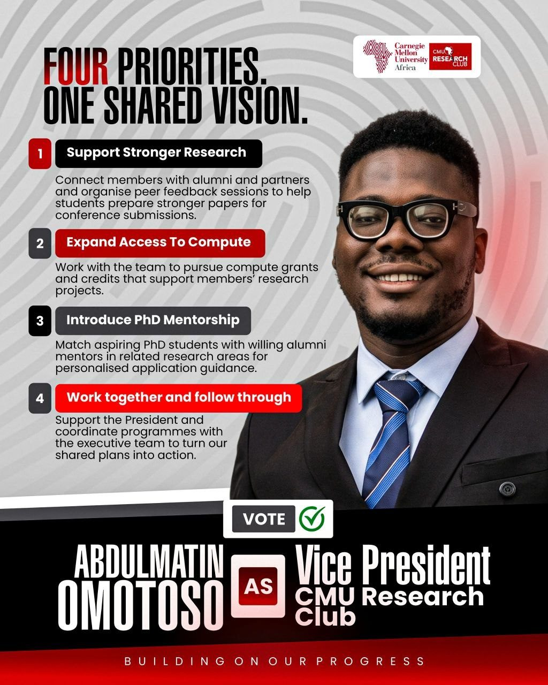

CMU Research Club elections
Abdulmatin for Vice President
Let's build on what our club has achieved and help more of us publish at the top conferences.
Voting day: Saturday, 21 November Coming up

CMU Research Club elections
Let's build on what our club has achieved and help more of us publish at the top conferences.
The current Research Club leadership, working with the Ministry of Research and Academics, has helped far more students get involved in research and publish their work. That's worth celebrating, and it's something I want to build on rather than start over.
NeurIPS workshop papers from our community, last year compared with this year. The next step is helping more of that work reach main conference tracks.
I'd like us to build on our workshop success and help more members submit to main conference tracks at venues like ACL, EMNLP, EACL, Interspeech and ECCV. Some of our alumni have already shown it can be done. This year, Alex Gichamba published at Interspeech and Edward Ajayi at EMNLP, and there's a lot we can learn from how they got there.
What is research without the compute to test our ideas? For many of us, access to GPUs decides how far a project can go. Last year, ML Collective Africa got $5,000 in Modal compute credits by applying as a community, and my focus group there received $650 for our project. I benefited from that support myself, and I'd love to bring the same kind of opportunity to our club.
If you have a project in mind right now, Modal is accepting applications through its Builders programme: modal.com/builders

BUILDING ON OUR PROGRESS
If you agree with these plans, please vote, and share this page with other members of the club. Questions or ideas? Email me at aomotoso@andrew.cmu.edu or find me on campus.
#VoteAbdulmatin4VP · #VoteAbdulmatin4Continuity